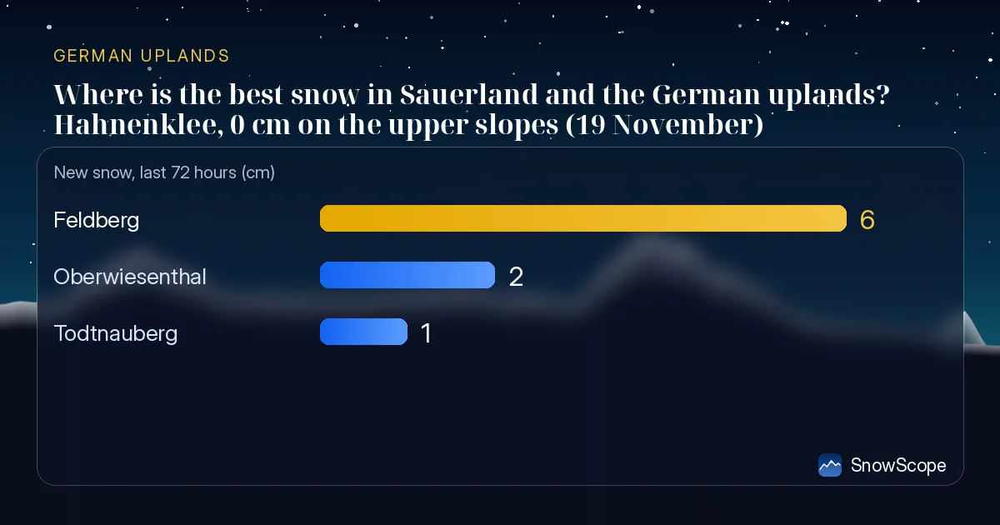
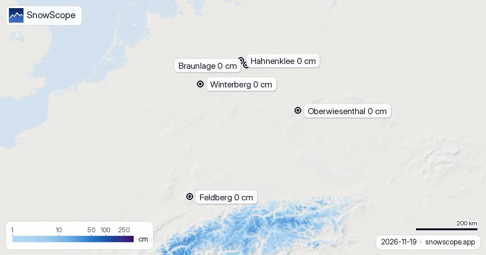

Where is the best snow in Sauerland and the German uplands? Hahnenklee, 0 cm on the upper slopes (19 November)
On 19 November, no snow lies on the slopes of Sauerland and the German uplands. The good news: Feldberg will gain 29 cm by Sunday 22 November, and three resorts caught fresh snow in the past three days.
See the live snow forecast for Hahnenklee in the SnowScope appSnow depth, powder alerts and the 3D map, free.
The snow map on 19 November
All 8 resorts across the region report 0 cm on their upper slopes. The highest lift here is Feldberg at 1,446 m; the lowest is Hahnenklee at 725 m. At this early stage of winter, bare ground is normal across the lower German hills.
Three resorts did see fresh snow fall in the last 72 hours: Feldberg picked up 6 cm, Oberwiesenthal 2 cm and Todtnauberg 1 cm. The rest have had no new snow yet.
| Resort | Snow depth | New snow, 72 h | Coming, next days | Top |
|---|---|---|---|---|
| Hahnenklee | 0 cm | 0 cm | 0 cm | 725 m |
| Feldberg | 0 cm | 6 cm | 29 cm | 1,446 m |
| Braunlage | 0 cm | 0 cm | 1 cm | 817 m |
| Oberwiesenthal | 0 cm | 2 cm | 7 cm | 1,211 m |
| Winterberg | 0 cm | 0 cm | 0 cm | 809 m |
| Todtnauberg | 0 cm | 1 cm | 15 cm | 1,374 m |

What is coming: snow forecast for the next three days
By Sunday 22 November, Feldberg is forecast to gain 29 cm. This is the biggest snow event expected in the region this week. Todtnauberg will add 15 cm and Oberwiesenthal 7 cm. The lower resorts—Winterberg, Willingen, Braunlage, Hahnenklee and Wurmberg—will see little or no new snow.
The forecast shows that altitude will decide where you can ski. Feldberg, at 1,446 m, sits high enough to catch more snow from weather systems moving north. By the end of the weekend, it alone should have a base worth considering.
Which height matters most this week
The pattern is clear: lifts above 1,300 m catch snow better. Feldberg at 1,446 m and Todtnauberg at 1,374 m both sit in the zone where cold air lingers and snow sticks. Below 1,000 m, rain often falls instead of snow, or snow melts quickly on the bare ground underneath.
If you are planning a trip this week, the highest resorts are your only real option. The lower hills in the Sauerland will stay brown.
Three days of travel time from the Netherlands
By car from the Netherlands, Sauerland takes three to four hours to reach. The drive to higher altitude resorts means winter tyres or chains for the last climb to Feldberg or Todtnauberg. Leave early to clear the border tunnels before afternoon queues.
If Feldberg's forecast snow arrives as expected, the journey will be worth it. By Sunday you should have enough base to ski the groomed runs safely.
Thin base, hidden rocks: stay on the pistes
Early-season snow sits on bare earth and hidden rocks. Even where fresh snow falls, the base underneath remains thin. Off-piste skiing is not safe yet; your skis will hit ground or stumps within metres of the marked runs.
On marked pistes, the new snow will be soft when it arrives, but wax your skis before you go. After Sunday, as sun and other skiers work the slopes, the cover will firm up. For off-piste work, wait until the base depth reaches at least 20 cm across the region, or read the official avalanche bulletin before you leave the piste.
Best timing for a weekend trip
If you are free between now and 22 November, go midweek or by Saturday morning, while the new snow is fresh on the groomed runs. By Sunday afternoon, traffic and sun will have softened the cover. Later in the week, conditions will harden and thin.
Feldberg is the safest choice: it will have the deepest base and the highest lifts. Todtnauberg offers a quieter alternative, but Feldberg's extra height and forecast snow depth make it the more reliable option for a short trip.
Tips for skiers
- Aim for Feldberg (1,446 m) this weekend if the 29 cm forecast arrives; it will be the only resort with enough base to ski reliably.
- Winter tyres or chains are essential for the last kilometres to either Feldberg or Todtnauberg.
- Start your day early to ski fresh snow after a cold night; afternoon sun will soften the cover quickly.
- Stay on marked pistes and groomers; rocks and stumps lie just below the thin early-season base everywhere off the runs.
- Check the official avalanche bulletin before any off-piste skiing, and wait for deeper snow across the region before you venture away from the groomed lines.
About these numbers
Resort snow depths are the deepest snow on the resort's upper slopes on the date shown; they are estimates for an area, not a measurement at one point. Forecasts can change. Always read the official avalanche bulletin before going off-piste.
Cite this report
For research, teaching or the press: the numbers and charts are free to reuse under CC BY 4.0 with this citation.
SnowScope (2026), Where is the best snow in Sauerland and the German uplands? Hahnenklee, 0 cm on the upper slopes (19 November), https://snowscope.app/blog/en/2026/11/sneeuw-sauerland-winterberg-19-november-2026.html, accessed 2026-11-19
SnowScope (Atlas Labs). (2026, November 19). Where is the best snow in Sauerland and the German uplands? Hahnenklee, 0 cm on the upper slopes (19 November). SnowScope snow reports. https://snowscope.app/blog/en/2026/11/sneeuw-sauerland-winterberg-19-november-2026.html
BibTeX
@misc{snowscope2026sneeuwsauerlandwinterber,
author = {{SnowScope (Atlas Labs)}},
title = {Where is the best snow in Sauerland and the German uplands? Hahnenklee, 0 cm on the upper slopes (19 November)},
year = {2026},
month = nov,
howpublished = {\url{https://snowscope.app/blog/en/2026/11/sneeuw-sauerland-winterberg-19-november-2026.html}},
note = {Published 2026-11-19 12:03 UTC; accessed 2026-11-19}
}· CC BY 4.0 · Methods, data and tools →
Hahnenklee: snow and temperature by height, this winter vs last (tools) →
Follow Hahnenklee
Free: a message when fresh snow is coming, and the forecast every morning.
More snow reports

SnowScope's peak finder is a free peak finder app: point your phone at the mountains and it names the summits, with height, distance and climb time. Our tests: 98 % of the summits it lists are really in sight, and on real photos it corrected compass errors of up to 105° to 0.15°. Free with 3 names, every peak for $0.99 once.

A slope map of Les Grands Montets and seven other ski areas shows how much of the ground is steeper than 30°, 35° and 40°, and why that line matters for avalanches.

We compared the snow on 10 November with each winter's deepest snow at 46 ski resorts over 46 winters. A snowy start helps, but less than many skiers think.